측량및지형공간정보기사 (2019-04-27 기출문제)
1과목: 측지학 및 위성측위시스템
1. 거리의 허용정밀도가 1/106일 때 지구의 곡률을 고려하여야 하는 측량구역 범위로 옳은 것은? (단, 지구반지름 R=6370km)
- 반지름=22km, 면적=400km2 이상인 지역
- 반지름=11km, 면적=400km2 이상인 지역
- 지름=22km, 면적 = 100km2 이상인 지역
- 지름=11km, 면적 = 100km2 이상인 지역
(정답률: 70%)

2. GPS 측량의 기준좌표계인 WGS84에 대한 설명으로 옳지 않은 것은?
- 전 세계적으로 측정해온 지구의 중력장과 지구 모양을 근거로 해서 만들어진 좌표계이다.
- X축은 국제시보국(BIH)에서 정의한 본초자오선과 평행한 평면이 지구 적도면과 교차하는 선이다.
- Y축은 X축과 Z축이 이루는 평면에 서쪽으로 수직인 방향(서쪽으로 90°)으로 정의된다.
- Z축은 1984년 국제시보국(BIH)에서 채택한 평균근축(CTP)과 평행하다.
(정답률: 62%)
3. 지구의 자전축이 황도면의 수직방향에 대하여 약 23.5° 기울기를 가지고 약 26000년을 주기로 회전하는 현상은?
- 장동(natation)
- 세차(precession)
- 균시차(equation of time)
- 일주운동(diurnal motion)
(정답률: 73%)
4. 극심입체투영법에 의해 위도 80°이상 양극지역의 지도 좌표를 표시하는데 사용되는 것은?
- UPS좌표
- 3차원극좌표
- UTM좌표
- 가우스그뤼거좌표
(정답률: 69%)
5. 항공 및 해상 중력관측의 경우 이동 중 관측을 실시하게 되므로 관측기기의 속도에 의한 영향을 보정하기 위한 것은?
- 아이소스타시 보정
- 프리에어 보정
- 에트뵈스 보정
- 부게 보정
(정답률: 54%)
6. GNSS측량의 오차에 대한 설명으로 틀린 것은?
- GNSS의 오차에는 위성시계 오차, 대기 굴절 오차, 수신기 오차 등이 있다.
- 위성의 위치오차는 위성의 배치상태의 오차를 말하며 측점의 좌표계산에는 영향을 주지 않는다.
- 안테나의 높이 측정오차의 구심오차는 안테나의 중심과 위상중심의 차이에서 발생하는 오차를 말한다.
- 위성의 기하학적 배치상태가 정밀도에 주는 영향을 추정할 수 있는 척도로 DOP(Dilution Of Precision)를 사용한다.
(정답률: 72%)
7. GNSS 반송파 위상추적회로에서 반송파 위상관측값에 순간적인 손실이 발생하는 현상을 무엇이라 하는가?
- AS
- Cycle Slip
- SA
- VRS
(정답률: 81%)
8. 위성 측위 시스템이 아닌 것은?
- GPS
- GLONASS
- EDM
- Galileo
(정답률: 78%)
9. UTM(Universal Transverse Mercator Projection)좌표계에서 사용하는 원점의 축척계수는?
- 1.0000
- 1.0001
- 0.9999
- 0.9996
(정답률: 66%)
10. 기종이 서로 다른 GNSS 수신기를 혼합하여 관측하였을 경우 수집된 GNSS 데이터의 기선 해석이 용이하도록 고안된 세계 표준의 GNSS 데이터의 자료형식은?
- RINEX
- DXF
- DWG
- RTCM
(정답률: 78%)
11. GNSS 단독측위에서 4개 위성의 관측점 좌표 x, y에 대한 Cofactor 행렬의 대각선요소가 각각 σxx=0.75, σyy=1.13일 때 관측점의 수평정확도 저하율(HDOP)는?
- 0.85
- 1.36
- 1.51
- 1.88
(정답률: 62%)
12. 중력관측점과 지오이드면 사이의 질량을 고려한 중력이상을 무엇이라 하는가?
- 부게이상
- 프리에어이상
- 지각균형이상
- 지구자기이상
(정답률: 72%)
13. GPS 위성측량에 관한 설명으로 틀린 것은?
- SA(선택적 부가오차)의 해제로 절대측위의 정확도가 향상되었다.
- 수신기 시계의 오차가 없다면 3대의 위성신호를 사용하여도 위치결정이 가능하다.
- GPS 위성은 위성마다 각각 자기의 코드신호를 전송한다.
- 위성과 수신기 간의 거리측정의 정확도는 C/A 코드를 사용하거나 L1 반송파를 사용하거나 차이가 없다.
(정답률: 62%)
14. VRS(virtual reference station)를 활용한 GNSS 측량에 대한 설명으로 틀린 것은?
- 코드데이터 기반으로 측량을 수행한다.
- 중앙국과의 무선통신이 가능해야 한다.
- 중앙국에서 계산된 오차를 이용하여 위치를 결정하는 기법이다.
- 실시간 측위가 가능하다.
(정답률: 58%)
15. 통합기준점을 GNSS측량을 통해 관측을 실시할 경우에 준수하여야 할 사항에 대한 설명으로 옳지 않은 것은?
- GNSS측량은 정적간섭측위방식으로 실시한다.
- 위성 고도각은 15°이상의 것을 사용한다.
- 관측시간은 연속으로 8시간을 표준으로 한다.
- 동시 수신 위성은 최소 6개 이상이 되도록 한다.
(정답률: 65%)
16. 지구 자기의 북반부에서는 북극으로 갈수록 자침이 남극 쪽을 무겁게 하거나 길게 하는데 그 이유로 가장 알맞은 것은?
- 북으로 갈수록 편각이 작아지므로
- 북으로 갈수록 편각이 커지므로
- 북으로 갈수록 복각이 작아지므로
- 북으로 갈수록 복각이 커지므로
(정답률: 51%)
17. 지표면상 구면삼각형의 각을 관측한 결과∠A=50°20', ∠B=66°25', ∠C=64°35'이었다면 지구의 곡률반지름이 6250km라고 할 때, 구면삼각형 ABC의 면적은?
- 266000km2
- 422000km2
- 909025km2
- 944000km2
(정답률: 61%)
18. 천문좌표계에 속하지 않는 것은?
- 지평좌표
- 적도좌표
- 경위도좌표
- 황도좌표
(정답률: 62%)
19. 자석으로 진북을 결정할 때 필요한 지구자기의 요소는?
- 복각
- 편각
- 수평자기력
- 연직자기력
(정답률: 52%)
20. 다음 중 물리학적 측지학에 속하지 않는 것은?
- 지오이드 모델 결정
- 중력측정
- 시각의 결정
- 지구내부 물질조사
(정답률: 62%)
2과목: 응용측량
21. 그림에서 V지점에 해당하는 종단곡선(Vertical curve) 상의 계획고(Elevation)는? (단, 종단곡선은 2차포물선이고, A점의 계획고=65.50m)
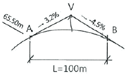
- 66.14m
- 66.57m
- 66.83m
- 67.49m
(정답률: 31%)
22. 노선측량에서 단곡선의 곡선반지름 R=100m, 교각 I=60°라면 옳지 않은 것은?
- 장현(L)=120m
- 외할(E)=15.5m
- 중앙종거(M)=13.4m
- 접선장(T.L)=57.7m
(정답률: 54%)
23. 하천 횡단면의 연직선에서 평균유속을 구하기 위하여 1점법을 사용할 때 옳은 것은?
- 수면에서 수심의 2/10 지점의 유속을 측정하여 그 값을 평균유속으로 한다.
- 수면에서 수심의 4/10 지점의 유속을 측정하여 그 값을 평균유속으로 한다.
- 수면에서 수심의 6/10 지점의 유속을 측정하여 그 값을 평균유속으로 한다.
- 수면에서 수심의 8/10 지점의 유속을 측정하여 그 값을 평균유속으로 한다.
(정답률: 63%)
24. 노선측량 중 시공측량에 속하지 않는 것은?
- 용지측량
- 중심점 인조측량
- 시공기준틀 설치측량
- 준공검사 조사측량
(정답률: 47%)
25. 곡선반지름 R=100m 되는 원곡선을 속도 100km/h로 주행할 떄의 캔트(cant)는? (단, 궤간은 1.067m이다.)
- 약 110mm
- 약 740mm
- 약 840mm
- 약 940mm
(정답률: 50%)
26. 하천측량에서 평면측량의 범위 및 거리에 대한 설명으로 옳지 않은 것은?
- 유제부에서의 측량범위는 제외지 전부와 제내지 100m 이내로 한다.
- 무제부에서의 측량범위는 과거 최대홍수위선 이상까지로 한다.
- 홍수 방지 공사가 목적인 하천 공사에서는 하구에서부터 상류의 홍수 피해가 미치는 지점까지로 한다.
- 선박 운행을 위한 하천 개수가 목적일 때 하류는 하구까지로 한다.
(정답률: 59%)
27. 직사각형의 토지를 가로, 세로 방향으로 관측하여 65.45m, 58.55m를 얻었다. 길이의 측정값을 각각±1cm의 표준오차로 유지할 때 면적의 표준오차는?
- ±0.77m2
- ±0.88m2
- ±1.50m2
- ±1.76m2
(정답률: 54%)
28. 원곡선 설치에 있어서 곡선 반지름 R=250m, 교각 I=130°일 때, 곡선길이(C.L)는?
- C.L=553.25m
- C.L=567.23m
- C.L=570.25m
- C.L=575.23m
(정답률: 62%)
29. 전자파의 반사 성질을 이용하여 지하의 각종 현상을 밝히는 측량방법은?
- 음파측량기법
- GNSS 측량기법
- 전자유도 측량기법
- 지중 레이다 측량기법
(정답률: 42%)
30. 그림의 면적을 Simpson 제2법칙으로 구한 값은? (단, 지거는 일정)
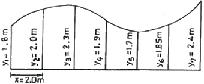
- 11.20m2
- 13.66m2
- 21.20m2
- 23.66m2
(정답률: 43%)
31. 다음 중 터널측량 작업순서로 옳은 것은?
- 예측→지표설치→답사→지하설치
- 답사→예측→지표설치→지하설치
- 예측→답사→지하설치→지표설치
- 답사→지표설치→예측→지하설치
(정답률: 66%)
32. 제방의 축조, 교량의 건설, 배수공사 등 주로 치수(治水) 목적에 이용되는 수위는?
- 평균최저수위
- 평균수위
- 평균최고수위
- 경계수위
(정답률: 60%)
33. 측점 A, B, C의 좌표가 아래와 같을 때 토지(△ABC)의 면적은?
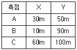
- 550m2
- 1100m2
- 2200m2
- 4400m2
(정답률: 50%)
34. 어떤 지점에서 조석관측을 수행하였을 경우 연이은 두 고조 또는 두 저조의 높이가 다르게 나타나게 되는데 이런 현상을 무엇이라고 하는가?
- 평균고조간격
- 평균저조간격
- 반일주조
- 일조부등
(정답률: 63%)
35. 수로측량 기간 동안 실시하는 30일 이상부터 1년 미만까지의 조석관측은?
- 단기조석관측
- 장기조석관측
- 연속조석관측
- 상시조석관측
(정답률: 50%)
36. 터널 내 측량에 대한 설명으로 옳지 않은 것은?
- 터널 내 수준점은 터널 내 작업에 의하여 파손되지 않고 측량에 편리한 장소에 설치한다.
- 다보(dowel)는 터널 내부의 기준점 설치를 위해 사용되는 적외선 장비를 말한다.
- 역 로드(rod)란 천정에 고저기준점을 만들 경우 표척을 반대로 사용하는 것을 말한다.
- 터널 내 고저측량 시 표척과 레벨에 조명이 필요하다.
(정답률: 66%)
37. 터널공사에서 터널 내의 기준점설치에 사용되는 방법으로만 연결된 것은?
- 삼각측량, 평판측량
- 평판측량, 트래버스측량
- 트래버스측량, 수준측량
- 수준측량, 삼각측량
(정답률: 63%)
38. 하천수위 중 갈수위에 대한 설명으로 옳은 것은?
- 1년을 통하여 275일간은 이보다 내려가지 않는 수위
- 수년간 저수위 및 고수위 평균한 수위
- 어느 기간 중 가장 많이 일어난 수위
- 1년을 통하여 355일간은 이보다 내려가지 않는 수위
(정답률: 61%)
39. 기존 노선에서 구곡선의 교각(I=40°)과 두 접선은 유지하면서 그림과 같이 새로운 곡선을 설치하려고 할 때, 구곡선의 곡선중점과 새로운 곡선의 곡선중점 간의 이동거리(e)는? (단, 구곡선의 반지름 R1=250m, 새로운 곡선의 반지름 R2=300m)
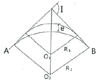
- 3.209m
- 5.235m
- 4.439m
- 6.028m
(정답률: 40%)
40. 그림과 같이 삼각형(ABC)을 면적비 m:n으로 분할할 경우 BD의 길이는?
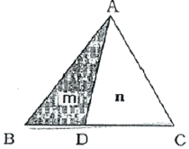
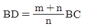
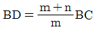
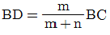
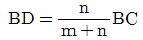
(정답률: 69%)
3과목: 사진측량 및 원격탐사
41. 식물의 성장 상태를 조사하기 위하여 가장 적합한 사진은?
- 팬크로사진
- 적외선사진
- 천연색사진
- 레이더사진
(정답률: 68%)
42. 아날로그 항공사진에서 주점의 위치를 알기 위해 필요한 것은?
- 주점거리
- 사진지표
- 수준기
- 촬영고도
(정답률: 54%)
43. 항공사진의 표정을 위한 2차원 좌표변환식 중 등각사상변환식의 종류로 옳지 않은 것은?
- 회전변환
- 보간변환
- 축척변환
- 평행이동변환
(정답률: 49%)
44. 입체도화기에서 항공사진을 절대표정(absolute orientation)을 할 때의 동일한 직선상에 위치하지 않은 최소 기준점의 수는?
- 2점의 평면좌표 및 3점의 표고좌표
- 3점의 평면좌표 및 3점의 표고좌표
- 2점의 평면좌표 및 2점의 표고좌표
- 3점의 평면좌표 및 4점의 표고좌표
(정답률: 55%)
45. 항공사진의 기복변위에 관한 설명으로 틀린 것은?
- 기복변위는 중심투영으로 인하여 생긴다.
- 변위량은 촬영고도에 비례한다.
- 변위량은 지형지물의 비고에 비례한다.
- 변위량은 연직점에서 상이 생기는 거리에 비례한다.
(정답률: 49%)
46. 영상분류 기법 중 감독분류에 대한 설명이 아닌 것은?
- 표본 설정 단계에서 감독자의 개입이 불필요하다.
- 관심있는 분류 항목을 대표할 수 잇는 표본을 기준으로 영상을 분류한다.
- 정확하고 신뢰성 잇는 표본 설정이 이루어져야 분류 정확도가 높다.
- 원격탐사 영상의 정량적인 분석도구로 사용된다.
(정답률: 68%)
47. 숲 지역에서 수치표고모형(DEM) 데이터를 추출하기 위한 방법 중 가장 정확도가 높은 방법은?
- 항공사진측량
- 항공레이저측량
- 기존수치지도이용
- 위성영상자료이용
(정답률: 64%)
48. 원격탐사 센서 중 센서 자체에서 발사한 신호의 반사강도와 위상을 관측하여 지표면의 2차원 영상을 얻는 방식은?
- TM(thematic mapper)
- RVB(return beam vidicon)
- MSS(multi spectral scanner)
- SAR(synthetic aperture radar)
(정답률: 47%)
49. 사진의 편위수정을 통하여 제거되는 것은?
- 경사변위
- 기복변위
- 대상물 비고
- 시차
(정답률: 36%)
50. 항공사진 축척이 1:10000이고 비행코스 방향의 중복도 60%, 비행코스간의 중복도 30%일 때 23cm×23cm인 사진 1매의 유효모델 면적은?
- 11.89km2
- 4.76km2
- 1.48km2
- 2.14km2
(정답률: 49%)
51. 비행고도가 기준면으로부터 2,000m, 비행속도가 360km/h일 때, 탑재된 사진기의 초점거리가 150mm, 촬영노출시간이 1/250sec이다. 기준면으로부터 표고가 500m인 지역을 촬영할 경우, 사진상의 허용흔들림량은?
- 20㎛
- 30㎛
- 40㎛
- 50㎛
(정답률: 43%)
52. 입체도화기에 의해 등고선을 그릴 때 등고선 높이의 오차를 등고선 간격(등거리)의 1/2이하로 하기 위한 측정 시차차의 최대 오차는? (단, 사진축척 1/35000, 카메라의 초점거리 15cm, 사진크기 23cm×23cm, 중복도 60%, 등고선 간격 5m이다.)
- 0.15mm
- 0.06mm
- 0.02mm
- 0.04mm
(정답률: 28%)
53. 다음의 전자파 파장 중에서 가시광선 영역에 속하는 것은?
- 0.3㎛ ~ 0.4㎛
- 0.3mm ~ 0.4mm
- 0.4㎛ ~ 0.7㎛
- 0.4mm ~ 0.7mm
(정답률: 63%)
54. 원격탐사의 자료변환 시스템에서 발생할 수 있는 기하학적인 오차나 왜곡의 원인이 아닌 것은?
- 센서의 가하학적 특성에 기인한 오차
- 인공위성의 크기에 기인한 오차
- 플랫폼의 자세에 기인한 오차
- 지표의 기복에 기인한 오차
(정답률: 65%)
55. 과고감에 대한 설명으로 틀린 것은?
- 입체시할 떄 평면축척보다 수직축척이 크게 나타나는 현상이다.
- 입체시할 때 눈의 위치가 약간 높아지면 과고감이 더 커진다.
- 과고감은 동일 촬영조건시 종중복도에 비례한다.
- 과고감은 기선고도비에 비례한다.
(정답률: 51%)
56. 표고 570m의 지점을 초점거리가 210mm의 카메라로 기준면으로부터 고도 5,820m에서 촬영된 사진의 축척은?
- 1 : 15000
- 1 : 19000
- 1 : 20000
- 1 : 25000
(정답률: 63%)
57. 항공사진측량용 광각 카메라에 대한 설명으로 옳지 않은 것은?
- 렌즈 피사각이 120°정도이다.
- 초점거리가 152mm정도이다.
- 사진크기가 23cm×23cm이다.
- 일반도화 및 판독에 적합하다.
(정답률: 58%)
58. 항공사진의 판독 순서로 옳은 것은?
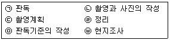
- ㉢-㉡-㉤-㉠-㉥-㉣
- ㉢-㉥-㉡-㉤-㉠-㉣
- ㉢-㉤-㉡-㉠-㉥-㉣
- ㉢-㉥-㉤-㉡-㉠-㉣
(정답률: 37%)
59. 항공삼각측량에서 조정방법에 따라 정확도가 높은 것부터 낮은 순서로 나열된 것은?
- 기계법 - 도해법 - 해석적 방법
- 도해법 - 기계법 - 해석적 방법
- 해석적 방법 - 도해법 - 기계법
- 해석적 방법 - 기계법 - 도해법
(정답률: 46%)
60. 상호표정요소를 계산하기 위하여 측정하여야 할 공액점의 최소 개수는?
- 2개
- 3개
- 4개
- 5개
(정답률: 44%)
4과목: 지리정보시스템
61. 지리정보시스템(GIS)에서 도로에 대한 데이터베이스를 구축할 때, 도로포장 일자, 포장종류, 차로 수, 보수 일자와 같은 정보를 무엇이라 하는가?
- 위상 정보
- 지리적 위치
- 공간적 관계
- 속성 정보
(정답률: 72%)
62. 수치지도의 속성정확도 검증을 위하여 다음과 같은 오차행렬을 작성하였다. 오차행렬로 부터 알 수 있는 것이 아닌 것은?
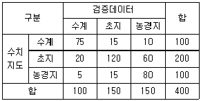
- 전체정확도는 275/400=68.8%이다.
- 수계는 사용자정확도와 제작자정확도가 같다.
- 농경지의 제작자정확도가 초지의 제작자정확도에 비해 높다.
- 농경지 사용자정확도는 80.0%이다.
(정답률: 50%)
63. 다음 중 지리정보와 가장 거리가 먼 것은?
- 지역별 연평균 강우량 정보
- 행정구역별 인구밀도 정보
- 직업군별 평균소득 정보
- 대상지역의 경사도 분포 정보
(정답률: 75%)
64. 우리나라에서 구축 및 운영 중인 다양한 공간정보시스템과 관련된 용어에 대한 설명으로 틀린 것은?
- KLIS : 한국국토유지관리시스템
- NSDI : 국가공간정보포털
- VWORLD : 공간정보 오픈플랫폼
- UPIS : 도시계획 통합 정보서비스
(정답률: 52%)
65. 지리정보시스템(GIS)의 벡터자료를 구성하는 요소에 대한 설명이다. 다음 중 설명하는 요소가 다른 것은?
- 최소 3개 이상의 선으로 폐합되는 2차원 객체의 표현으로 폭과 길이의 개념이 존재한다.
- 다수 좌표(X,Y)의 집합으로 아크(arc), 체인(chain), 스트링(string)의 용어로 표현된다.
- 두 개 이상의 점사상으로 표현되는 선형으로 1차원 객체를 표현한다.
- 선형 네트워크를 생성하기 위해서 자료구조에 포인터(pointer)를 삽입해야 한다.
(정답률: 35%)
66. 어떤 위치의 속성을 그 위치에서 가장 가까운 지점의 값으로 지정할 수 있도록 구역을 설정하는 점대면 보간방법으로, 강우량 자료보간에 많이 쓰이는 방법은?
- 역거리경증법
- Kriging
- Thiessen polygon
- TIN
(정답률: 52%)
67. ＜보기＞의 체인 코드 형식으로 표현된 레스터데이터로 옳은 것은?
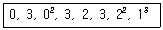
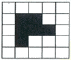
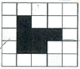
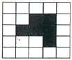
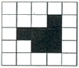
(정답률: 47%)
68. 부울 논리(Boolean Logic)를 이용하여 속성과 공간적 특성에 대한 자료를 검색(검게 채색된 부분)하는 방법으로 잘못 짝지어진 것은?
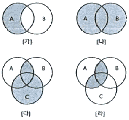
- [가] - A NOT B
- [나] - A OR B
- [다] - (A NOT B) OR C
- [라] - A AND (B OR C)
(정답률: 62%)
69. 부정확한 디지타이징 때문에 발생하는 위상오차로 한쪽 끝이 다른 연결점이나 절점(Node)에 완전히 연결되지 않은 상태의 연결선을 무엇이라 하는가?
- Dangle
- Loop
- Spike
- Topology
(정답률: 48%)
70. 지리정보시스템(GIS) 분석 방법 중 유클리디언 거리 공식을 이용하는 방법은?
- 면 사상 중첩 분석
- 버퍼 분석
- 선 사상 중첩 분석
- 인접성 분석
(정답률: 60%)
71. 기하학적 객체를 생생하게 묘사하는 과정으로 추상적 현상의 표현들을 시각화할 때, 보는 사람의 관점에서 어떤 것이 어떻게 작동하는지 이해하기 위해 실세계를 단순화시키는 것을 의미하는 것은?
- searching
- conversing
- printing
- modeling
(정답률: 72%)
72. 지리정보시스템(GIS)의 영상이나 일반적인 데이터베이스 정보에 좌표를 부여하는 과정을 의미하는 것은?
- composition
- coordinates linkage
- georeferencing
- geoprocessing
(정답률: 58%)
73. 지리정보시스템(GIS)에서 표준화가 필요한 이유로 가장 거리가 먼 것은?
- 서로 다른 기관 간에 데이터 유출의 방지 및 데이터의 보안을 유지하기 위하여
- 데이터의 제작 시 사용된 하드웨어(H/W)나 소프트웨어(S/W)에 구애받지 않고 손쉽게 데이터를 사용하기 위하여
- 하나의 기관에서 구축한 데이터를 많은 기관들이 공유해 사용하기 위하여
- 데이터의 공동 활용을 통하여 데이터의 중복 구축을 방지함으로써 데이터 구축비용을 절약하기 위하여
(정답률: 65%)
74. 데이터베이스 설계의 시작점인 개념적 데이터모델링에서 가장 널리 이용하는 방법으로 객체-관계 모형(E-R model)이 있다. 다음 중에 E-R model의 구성요소가 아닌 것은?
- 보호(protection)
- 관계(relation)
- 속성(attrivutes)
- 개체(entity)
(정답률: 69%)
75. 등치선도(isarithmic map)에 대한 설명으로 옳지 않은 것은?
- 등치선도란 동일한 값을 지니는 점을 연결한 선으로 만들어진 지도이다.
- 등고선, 등온선, 등압선, 등우량선 등이 포함된다.
- 자연현상이 공간상에서 연속적으로 변화하는 경우에 적합하다.
- 일명 단계구분도(choropleth map)라고도 한다.
(정답률: 46%)
76. 래스터(raster) 데이터의 특징으로 옳지 않은 것은?
- 격자의 크기 조절로 자료용량의 조절이 가능하다.
- 자료의 데이터구조가 매우 복잡하며, 자료의 생성이 어렵다.
- 다양한 공간적 편의가 격자 형태로 나타나면 자료의 조작과정이 용이하다.
- 래스터자료는 주로 네모난 형태를 가지기 때문에 벡터자료에 비해 미관상 매끄럽지 못하다.
(정답률: 64%)
77. SQL(Structured Query Language)의 데이터 조작문(DML)에 해당하지 않는 것은?
- DROP
- UPDATE
- INSERT
- SELECT
(정답률: 64%)
78. 수치표고모델(DEM)만을 이요하여 얻을 수 있는 자료들로만 짝지어진 것은?
- 표고분석도, 역세권 분석도
- 사면방향도, 경사도에 대한 분석도
- 수계도, 토지피복도
- 가시권에 대한 분석도, 도로망도
(정답률: 70%)
79. 수치지형모델의 DEM과 TIN에 대한 설명으로 틀린 것은?
- 수치표고모델(DEM)은 규칙적인 격자망에 표고를 표현한다.
- GPS로 취득한 지형자료를 이용할 경우엔 TIN 방법이 유리하다.
- DEM방법은 사진측량에 의한 자동 디지타이징에 의한 지형자료 취득 시에 윤리하다.
- 지역적인 변화가 심한 복잡한 지형을 표현할 때는 DEM이 유리하다.
(정답률: 49%)
80. 데이터간의 상관관계를 파악하기 위해서 위상구조를 가진 형태로 구성하는 것을 무엇이라고 하는가?
- 연속편집
- 정위치편집
- 구조화편집
- 공간정보편집
(정답률: 53%)
5과목: 측량학
81. 토털스테이션이 많이 활용되는 측량 작업과 가장 거리가 먼 것은?
- 종ㆍ횡단 측량이 필요한 노선측량
- 고정밀도를 요하는 정밀 측량 및 지각변동관측 측량
- 지형측량과 같이 많은 점의 평면 및 표고좌표가 필요한 측량
- 거리와 각을 동시에 관측하면 작업효율이 높아지는 트래버스측량
(정답률: 58%)
82. 삼각형 3변의 길이가 그림과 같을 때 삼각형의 ∠A, ∠B로 옳은 것은?
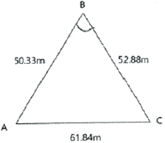
- ∠A=50°06'32", ∠B=72°35'25"
- ∠A=54°08'20", ∠B=69°34'25"
- ∠A=55°06'20", ∠B=73°34'25"
- ∠A=55°08'20", ∠B=69°34'25"
(정답률: 47%)
83. 기지점 A, B, C에서 출발하여 교점 P의 좌표를 구하기 위한 다각측량을 하였다. 교점 P의 최확값(x0, y0)은? (단, Xp, Yp는 각 측점으로부터 계산한 P점의 좌표)
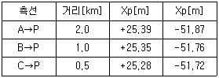
- x0=+25.34m, y0=-51.78m
- x0=+25.35m, y0=-51.75m
- x0=+25.32m, y0=-51.82m
- x0=+25.32m, y0=-51.75m
(정답률: 44%)
84. 동일한 사람이 20“ 독 토털스테이션과 1‘ 독 토털스테이션을 사용하여 각 측량을 할 때, 관측값에 대한 무게(weight:경중률)의 비는? (단, 기타 조건은 동일한 것으로 가정한다.)
- 1 : 9
- 1 : 3
- 3 : 1
- 9 : 1
(정답률: 44%)
85. 거리측량에서 착오(錯誤)에 대한 설명으로 옳지 않은 것은?
- 기록 또는 계산의 오류가 원인이 된다.
- 착오는 오차론에서 주로 취급하고 있다.
- 눈금의 읽음 과실도 그 원인 중의 하나이다.
- 일반적으로 착오를 먼저 제거한 다음에 정오차를 보정한다.
(정답률: 57%)
86. 다각측량에 대한 설명으로 옳지 않은 것은?
- 다각측량은 삼각측량과 비교하여 정확도가 낮은 편이다.
- 일반적으로 트래버스 중 결합트래버스의 정확도가 가장 높다.
- 각 관측의 정도가 거리관측의 정도보다 높으면 컴퍼스법칙을 적용한다.
- 횡거란 측선의 중점에서 자오선에 내린 수선의 길이이며 그 2배가 배횡거이다.
(정답률: 48%)
87. 동일한 각을 관측 횟수를 다르게 적용하여 얻은 결과가 표와 같을 때, 각의 최확값은?
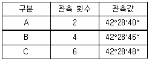
- 42°28‘44“
- 42°28‘46“
- 42°28‘48“
- 42°28‘50“
(정답률: 51%)
88. 지형자료를 취득하기 위한 측량방법이 아닌 것은?
- 토털스테이션측량
- GNSS측량
- INS측량
- 항공사진측량
(정답률: 60%)
89. 수준측량에서 전시거리와 후시거리를 같게 하는 가장 주요한 이유는?
- 개인습관에 대한 오차가 소거된다.
- 기계오차와 지구곡률 오차가 소거된다.
- 표척의 침하에 의한 오차가 소거된다.
- 표척의 기울기에 대한 오차가 소거된다.
(정답률: 70%)
90. 그림과 같은 트래버스 측량에서 CD측선의 방위각은?
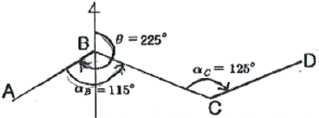
- 55°
- 135°
- 170°
- 255°
(정답률: 52%)
91. 그림과 같이 담장 PQ가 있어 P점에서 표척을 거꾸로 세워 관측하여 그림과 같은 결과를 얻었다. B점의 표고는? (단, A점의 표고는 135.000m 이다.)
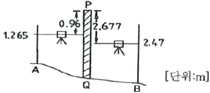
- 132.078m
- 132.470m
- 133.125m
- 133.215m
(정답률: 50%)
92. 삼각점 A에 기계를 설치하고 삼각점 B가 시준 되지 않아 점 P를 관측하여 T'=68°32'15"를 얻었을 때 보정각 T는? (단, S=1.3km, e=5m, ø=302°56')(오류 신고가 접수된 문제입니다. 반드시 정답과 해설을 확인하시기 바랍니다.)
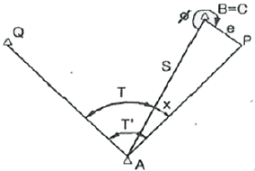
- 68°21'09"
- 68°48'07"
- 69°21'10"
- 69°48'07"
(정답률: 35%)
93. 지형을 지물과 지모로 분류할 때 지모에 해당되는 것은?
- 건물
- 빌딩
- 구릉
- 시가지
(정답률: 67%)
94. 지형측량의 결과인 등고선도의 이용과 가장 거리가 먼 것은?
- 지적도의 작성
- 노선의 도산선정
- 성토, 절토의 범위 결정
- 집수면적의 측정
(정답률: 56%)
95. 공공측량의 실시에 대한 설명으로 옳은 것은?
- 기본측량성과나 다른 공공측량성과를 기초로 실시한다.
- 기본측량성과나 일반측량성과를 기초로 실시한다.
- 기본측량성과만을 기초로 실시한다.
- 다른 공공측량성과나 일반측량성과를 기초로 실시한다.
(정답률: 54%)
96. 측량기준점을 크게 3가지로 구분할 때에 이에 속하지 않는 것은?
- 국가기준점
- 지적기준점
- 공공기준점
- 수로기준점
(정답률: 60%)
97. 국토지리정보원장이 간행하는 지도나 그밖에 필요한 간행물의 종류가 아닌 것은?
- 축척 1/600, 1/1500, 1/20000, 1/200000 및 1/2000000의 지도
- 국가인터넷지도, 점자지도, 대한민국전도, 대한민국주변도 및 세계지도
- 철도, 도로, 하천, 해안선, 건물, 수치표고모형, 실내공간정보, 정사영상 등에 관한 기본 공간정보
- 국가격자좌표정보 및 국가관심지점정보
(정답률: 49%)
98. 그림과 같은 평면도의 받침판 표지를 갖고 있는 국가기준점은?
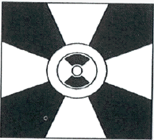
- 위성기준점
- 통합기준점
- 삼각점
- 수준점
(정답률: 65%)
99. 다음 중 국가공간정보체계의 효율적인 구축과 종합적 활용 및 관리에 관한 사항을 규정함으로써 국토 및 자원을 합리적으로 이요하여 국민경제의 발전에 이바지함을 목적으로 하는 것은?
- 국토기본법
- 공간정보산업 진흥법
- 국가공간정보 기본법
- 국토의 계획 및 이용에 관한 법률
(정답률: 46%)
100. 측량기준점표지를 파손하거나 그 효용을 해치는 행위를 한 자에 대한 벌칙 기준은?
- 3년 이하의 징역 또는 3천만원 이하의 벌금
- 2년 이하의 징역 또는 2천만원 이하의 벌금
- 1년 이하의 징역 또는 1천만원 이하의 벌금
- 300만원 이하의 과태료
(정답률: 51%)
Δx = RΔθ
여기서 Δx는 측량구역의 길이, Δθ는 측량구역의 각도 변화량이다. 따라서,
Δθ = Δx / R
Δθ는 라디안 단위로 표현되므로, 이를 도 단위로 변환하면 다음과 같다.
Δθ(도) = Δθ(라디안) × 180 / π
따라서, 측량구역의 각도 변화량 Δθ는 다음과 같다.
Δθ(도) = (Δx / R) × 180 / π
= (1/106 km / 6370 km) × 180 / π
≈ 0.0167 도
이제 측량구역의 범위를 구할 수 있다. 측량구역은 중심에서 Δθ/2 만큼 떨어진 지점까지의 범위이므로,
측량구역 범위 = 2πR(Δθ/2)
= πRΔθ
≈ 11 km
따라서, 측량구역의 반지름이 11km 이상이어야 한다. 또한, 측량구역의 면적은 다음과 같이 계산할 수 있다.
면적 = πR2(Δθ/2)
≈ 400 km2
따라서, 측량구역의 면적은 400km2 이상이어야 한다. 따라서, 정답은 "반지름=11km, 면적=400km2 이상인 지역"이다.